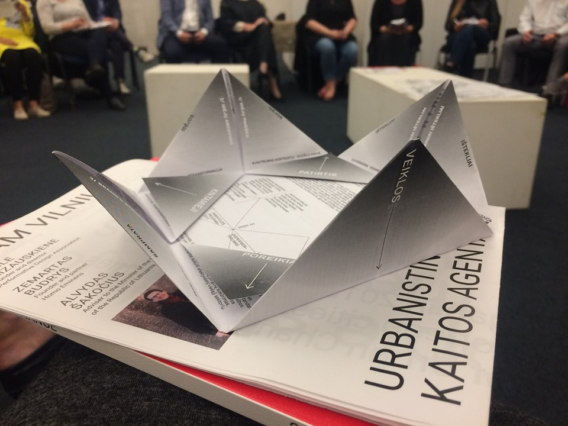

2019 metais...
... „Anthropos“ veikla pradėjo įsibėgėti. Laimėjome pirmuosius projektų finansavimus, organizavome pirmąją „Antropologijos dieną“, įgyvendinome nemažai dirbtuvių, buvo atlikta pora tyrimų, skaitėme viešas paskaitas ir taip sukaupėme patirties, ryžto bei pasitikėjimo naujoms veikloms. Taip pat, išaugo mūsų komanda – rudenį prie „Anthropos“ prisijungė Daina!
Ką nuveikėme?
- • Metus pradėjome su vieša paskaita „Taikomoji antropologija: kaip ją taikyti darbe su bendruomenėmis” „Kaunas 2022“ miesto bendruomenių programos „Fluxus Labas“ organizuotame renginyje.
- • Balandžio mėnesį dalyvavome Vytauto Didžiojo universiteto organizuojamoje V-ojoje Nacionalinėje jaunųjų sociologų ir antropologų konferencijoje: „Aktualūs sociologijos ir antropologijos tyrimai: problemos ir kontekstai". Čia vedėme seminarą: „Tai ką veikti su ta antropologija? Antropologo įgūdžių ir žinių taikymas“.
- • Gegužės mėnesį vyko mūsų organizuojamas renginys „Antropologijos diena 2019: Urbanistinis potyris“. Čia su įvairių sričių atstovėmis (-ais) ir antropologėmis (-ais) diskutavome apie miestus, jų gyventojus ir patirtis.
- • Atlikome tyrimą apie apsipirkimo įpročius iniciatyvai „Dydis Nesvarbu“.
- • Birželį vedėme antropologijos dirbtuves Šilutės pirmojoje gimnazijoje, Vilniaus Antaklanio progimnazės mokiniams Žalianamyje. Taip pat šiuolaikinio cirko festivalio metu “Cirkuliacija” surengėme dirbtuves „Pažink savo kaiminystę”, kurių metu gilinomės koks yra viešo ir privataus gyvenimo santykis taip kartais vadinamuose „miegamuosiuose rajonuose“.
- • Su kolega Tenno iš Estijos, įkūrėme „Applied Anthropology Baltis“ facebook puslapį, kur dalinamės renginiais ir naujienomis antropologijos ir taikomosios antropologijos srityse.
- • „Anthropos“ prisidėjo prie bendrakurybinio Ramintojos bažnyčios projekto, kurio metu Performatyvaus dizaino asociacija, MB „Homo Eminens“ ir Vidaus reikalų ministerija kūrė strategiją kaip įveiklinti šias patalpas atitinkančią Vidaus reikalų ministerijos misiją, bendruomenių poreikius, atskleidžiančią ir įgalinančią šios erdvės potencialą.
- • Įgyvendinome pirmą mūsų parašytą projektą - „Antropologijos dirbtuvės: maisto kelias ir besikeičiantis pasaulis“ finansuojamas Kauno m. savivaldybės „Iniciatyvos Kaunui” programos. Dirbtuvių metu kalbėjomės apie maistą kaip sociokultūrinį reiškinį, maisto produkcijos sistemas, klimato kaitą ir tvarius sprendimus. Taip pat skaičiavome kiek kilometrų nukeliauja mūsų pusryčių, pietų ir vakarienės ingridientai. Atlikome praktinę užduotį turguje, kurios metu dirbtuvių dalyviai trumpam tapo tyrėjomis (-ais) ir išbandė savo jėgas aiškinantis kauniečių maisto pirkimo ir pardavimo praktikas bei santykius turguje, apsilankėme eksursijoje apie miesto sodininkystę Šilainių soduose.
- • Spalį vedėme dirbtuvės apie klimato kaitą dokumentinių žmogaus teisių filmų festivalyje „Nepatogus kinas“.
- • Gavus „Nordplus“ finansavimą projektui Baltijos šalyse „Socialiniai mokslai socialiniam veiksmui“, lapkritį įvyko pirmoji projekto dalis – parternių susitikimas Kaunas, kur dalyvės (-iai) mokėsi socialinių mokslų žinias paversti konkrečiais veiksmais. Projekte dalyvauja „Anthropos“, „Jaunrades labaratorija“ iš Latvijos, „Estijos antropologijos asociacija“ ir „Tartu Nefa klubu“ iš Estijos.
- • Dalyvavome TEDxKaunas 2019 „Message in a Bottle“ renginyje, kur vedėme dirbtuves „Beyond The Obvious“. Kartu skyrėme akimirką pažvelgti, kas slepiasi už to, kas akivaizdu, tyrinėdamos (-ami) cukraus biografiją!
- • Gruodį buvome nominuoti tarp kandidatų tapti VDU Socialinių mokslų fakulteto 2019 metų žmogumi! Mums tai didelis įvertinimas, o kartu ir įkvėpimas tęsti pradėtus darbus!
- • Metų gale aplankė gera žinia iš Lietuvos vartotojų instituto, kad 2020 metais galėsime tęsti dirbtuves apie maistą, maisto švaistymą ir klimato kaitą ir gavome finansavimą ateinančių metų dirbtuvėms „Maistas ne(be)maistas“ Kauno, Vilniaus ir Klaipėdos mokyklose.



2019 metų biudžetas